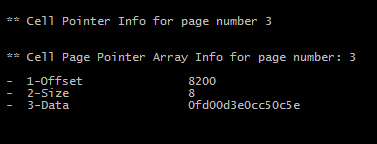

{kind=link}
En esta segunda parte, se procederá a recuperar **un mensaje que ha sido
eliminado** en la base de datos SQLite de la aplicación WhatsApp y se
analizará la información obtenida para determinar cuando se envío el
mensaje (timestamp) recuperado.
Estructura de SQLite (II)
Una vez que conocemos el esquema de la base de datos, y como se organiza
la información útil (payload data) dentro de las celdas de cada una de
las páginas, es conveniente conocer el formato completo del fichero
SQLite ([file
format](http://www.sqlite.org/fileformat.html#varint_format)) para
navegar en el fichero de forma adecuada.
Lo primero que se necesita es conocer el tamaño de las páginas y el
número total de páginas que contiene la base de datos, esta información
se encuentra dentro de la cabecera de la base de datos (database
header).
Analizando la base de datos del ejemplo (msgstore.db) y utilizando mi
propia herramienta DFSLite (Digital Forensics SQlite Tools)
desarrollada para la ocasión, se obtiene que:
| ST2Labs 4 - SQLite Database Header Info |
{kind=link}
Como se observa en la imagen anterior, se tiene que:
Page_size = 4096
Num_page = 27
La base de datos en el momento del análisis tiene un máximo de 27
páginas, como cada página tiene un tamaño especifico, se puede calcular
el Offset de acceso al fichero para cada una de las páginas utilizando
la siguiente formula:
Offset (pagina N) = (N -1) * Page_size
Se debe de tener en cuenta que las páginas se numeran desde 1 hasta N, y
que el Offset para la primera página es 0.
Cada página dentro de la base de datos (excepto la primera página)
guardan el siguiente formato:
 |
| ST2Labs 5 - SQLite Page Format |
Las celdas (registros) de la base de datos se rellenan desde el final de
la página hacia el inicio, con objeto de permitir que el Cell Pointer
Array aumente según se agregan registros a la página.
Analizando el contenido del “Cell Pointer Array” se obtienen el número
de celdas que contiene la página y el offset relativo a la página donde
comienzan. Con DFSLite se puede obtener un listado con todos los
Cell Pointer Array e información sobre los registros que existen en cada
una de las páginas de la base de datos de la siguiente forma:
| ST2Labs 6 - SQLite Page Cell Pointer Array Info |
{kind=link}
| ST2labs 7 - SQLite All Cell for Page List |
{kind=link}
Esta información es útil para identificar rápidamente que páginas tienen
registros (celdas) de información y cuales no. Además de obtener el
Offset absoluto y el número total de registros que hay dentro de la base
de datos en cada página.
Toda esta información es interesante desde el punto de vista Forense,
para centrar el análisis en aquellas páginas que no tengan registros
(mayor espacio sin utilizar), en busca de posible información eliminada
y que se encuentre almacenada.
Esto es posible, dado que como si de un sistema de ficheros se tratase
cuando se elimina información de la base de datos, esta no se “borra”
físicamente (no se sobrescribe de forma inmediata) simplemente se
elimina el indice de localización de la información en la base de datos,
y se queda residente en el fichero hasta que ésta sea sobrescrita
posteriormente con otra información.
Por ello, el periodo de **tiempo desde que un registro fue eliminado
hasta que se analiza de forma forense es crucial para recuperar la mayor
cantidad de información**, influyendo directamente el nivel de
intensidad de uso de la aplicación en ese tiempo con la capacidad de
recuperación de información útil.
Hasta aquí la introducción resumida del formato SQLite, se puede
profundizar más en el formato consultando la documentación oficial en el
siguiente
A continuación vamos directos a analizar la estructura de la tabla
“Messages” de la aplicación WhatsApp dentro de la base de datos SQLite.
**Estructura base datos
Whatsapp**
Tal y como se comprobó en el [primer
articul](http://www.seguridadparatodos.es/2015/11/digital-forensics-of-android-whatsapp.html)o,
con ayuda de la herramienta
sqlite_ex, se
averigua que la tabla “messages” de WhatsApp se encuentra almacenada en
la página 3 de la base de datos SQLite (msgstore.db).
Con ayuda de un editor hexadecimal, abrimos la base de datos y nos
dirigimos al Offset = 8192 correspondiente a la página 3 (véase la
formula comentada anteriormente para el cálculo). Para localizar
rápidamente los registros dentro de la página, me apoyo en la DFSLite
con la opción -p 3, para analizar la estructura del CellPointerArray de
la página, tal que así:
|  |
| ST2Labs 9 - Cell Pointer Array Info Page 3 |
{kind=link}
El CellPointer Array se encuentra en el Offset: 8200, se realiza un
Decode de “Data” y se obtiene el total de Offset relativos a la página
donde se encuentran los registros válidos (existentes) dentro de la base
de datos:
Decode Cell Pointer Array Data:
- Offsets: [4048, 3390, 3269, 3166]
Con el Offset relativo a la página 3, se puede calcular el Offset de
cada una de los registros válidos de la base de datos (msgstore.db).
por ejemplo: Cell Offset 3166 se corresponde con el Offset absoluto:
11358, se abre la base de datos con un editor hexadecimal y se obtiene:
| ST2Labs 10 - Hexa Cell Data Offset 11358 |
{kind=link}
La estructura de un registro (celda) de información de tipo Table, de
una base de datos SQLite tiene la siguiente estructura:
| ST2Labs 8 - Sqlite Cell File Format |
{kind=link}
Para calcular el tamaño de la celda, y el tamaño del payload la base de
datos SQLite utiliza el tipo VarInt, que consiste en el algoritmo de
codificación estático de Huffman de 64 bits, que permite codificar en un
máximo de 9 bytes el tamaño de la celda y/o el payload data.
** Para este artículo, no se va a explicar como decodificar los tipo
de datos VarInt.
Analizando la Información
Un registro (cell) dentro de la página 3 de la base de datos SQLite
(msgstore.db) de la aplicación WhatsApp almacenará la información de la
siguiente forma:
{kind=link}
Cada uno de los campos de la base de datos se codifica según lo que en
SQLite se conoce como “Serial Type Codes Of The Record Format”, como
ya podéis imaginar con DFSLite he decodificado la información del
PAYLOAD HEADER y se obtiene el tipo de cada uno de los campos de la base
de datos y el tamaño, para el caso aquí se analiza, el timestamp es tipo
Integer (48bits) ~ 6 bytes.
| ST2Labs 12 - DFSLite Decode Cell SQLite Data |
{kind=link}
Analizando la información con ayuda de un editor hexadecimal:
 |
| ST2Labs 13 - Cell Data to Offset 11358 |
Ya tenemos el timestamp del mensaje de WhatsApp, solo hace falta
decodificar el valor hexadecimal convertido a decimal para obtener un
valor Fecha y Hora.
Pero esto lo haremos en la ultima parte de mi artículo donde publicaré
el código de DFTime que convierte el timestamp de 6 bytes, y comentaré
como recuperar mensjes “eliminados” de la base de datos.
#ST2Labs
#GEOSystemSoftware
www.st2labs.com | www.seguridadparatodos.es